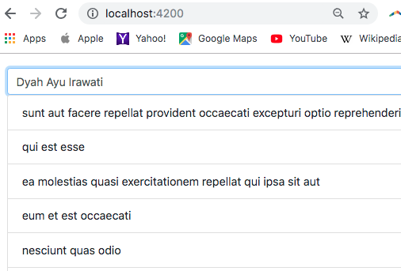
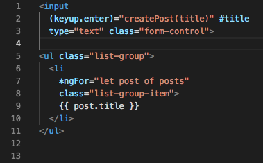

TUGAS PERORANGAN/INDIVIDU
LAPORAN BAB 9
HTTP SEVICE
Disusun Sebagai:
MATA KULIAH: PEMROGRAMAN WEB LANJUT
Oleh:
Moh. Khoirul Arifin/1741720051
TI-2B

PROGRAM STUDI D-IV TEKNIK INFORMATIKA
JURUSAN TEKNOLOGI INFORMASI
POLITEKNIK NEGERI MALANG
2019
Praktikum - Bagian 2 : Getting Data
Buat component baru dengan nama posts dengan perintah ng g c posts

Untuk menggunakan HTTPService, kita perlu melakukan import HttpModule pada app.module.ts.

Setelah kita menambahkan HttpModule pada bagian imports, maka secara otomatis akan menambah imports pada bagian paling atas
Hint :
Jika HttpModule tidak muncul secara otomatis maka anda harus menginstal terlebih dahulu dengan perintah npm i \@angular/http
Setelah \@angular/http terinstall, maka anda dapat menjalankan praktikum pada langkah 2.
Modifikasi file posts.component.ts menjadi seperti berikut:
Class Http pada contructor digunakan untuk melakukan HTTP request ke back end.
Ubah file app.component.html seperti berikut :
Jalankan dan Catat hasilnya (soal 1)
Bagaimana jika anda lupa melakukan import HttpModule pada langkah ke-2 ? Lakukan commenting pada HttpModule seperti pada kode berikut :
Apa yang terjadi pada console? Berikan penjelasan atas error yang terjadi. (soal 2)
Lengkapi kode program pada posts.component.ts menjadi :
Jalankan pada browser dan jelaskan yang muncul pada console. (soal 3)
Jelaskan perbedaan yang terjadi pada console jika kode pada posts.component.ts diubah menjadi : (soal 4)
Untuk menampilkan data pada halaman browser, ubah kode program pada posts.component.html seperti berikut :
Ubah kode program pada posts.component.ts :
Jalankan dan jelaskan apa yang muncul pada browser. (soal 5)
Praktikum - Bagian 3 : Creating Data
Perintah-perintah yang digunakan untuk melakukan HTTP Request diwakili oleh beberapa kata kerja sebagai berikut digambarkan pada gambar 3.

Gambar 3. HTTP Request
Kita akan menambahkan sebuah text area untuk memasukkan data melalui browser, seperti gambar berikut :

Pertama, tambahkan input elemen pada posts.component.html :

Modifikasi kode program pada posts.component.ts
Simpan dan jalankan pada browser.
Jelaskan dengan kalimatmu sendiri bagaimana jalannya program setiap baris pada fungsi createPost. (soal 6)
Praktikum - Bagian 4 : Updating Data
Kita akan menambahkan sebuah button Update untuk mengubah data melalui browser, seperti gambar berikut :

Tambahkan button Update dengan modifikasi kode program seperti di bawah ini
Tambahkan fungsi updatePost pada posts.ts seperti di bawah :
Simpan dan jalankan pada browser.
Apa fungsi patch pada potongan kode program pada langkah 3? (soal 7)
Praktikum - Bagian 5 : Deleting Data
Kita akan menambahkan sebuah button Delete di sebelah button Update untuk menghapus data melalui browser, seperti gambar berikut :
Tambahkan button Delete dengan modifikasi kode program seperti di bawah ini :
Tambahkan fungsi deletePost pada posts.ts seperti di bawah :
Simpan dan jalankan pada browser.
Apa fungsi splice pada potongan kode program pada langkah 3? (soal 8)